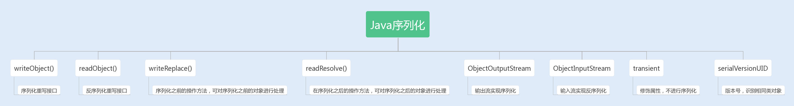
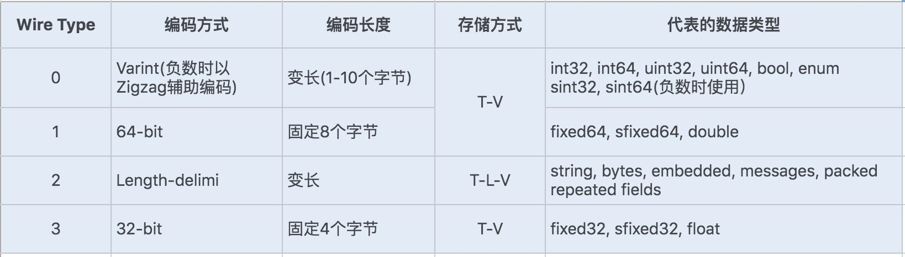

- 00 开篇词你为什么需要学习并发编程？.md.html
- 01 如何制定性能调优标准？.md.html
- 02 如何制定性能调优策略？.md.html
- 03 字符串性能优化不容小觑，百M内存轻松存储几十G数据.md.html
- 04 慎重使用正则表达式.md.html
- 05 ArrayList还是LinkedList？使用不当性能差千倍.md.html
- 06 Stream如何提高遍历集合效率？.md.html
- 07 深入浅出HashMap的设计与优化.md.html
- 08 网络通信优化之IO模型：如何解决高并发下IO瓶颈？.md.html
- 09 网络通信优化之序列化：避免使用Java序列化.md.html
- 10 网络通信优化之通信协议：如何优化RPC网络通信？.md.html
- 11 答疑课堂：深入了解NIO的优化实现原理.md.html
- 12 多线程之锁优化（上）：深入了解Synchronized同步锁的优化方法.md.html
- 13 多线程之锁优化（中）：深入了解Lock同步锁的优化方法.md.html
- 14 多线程之锁优化（下）：使用乐观锁优化并行操作.md.html
- 15 多线程调优（上）：哪些操作导致了上下文切换？.md.html
- 16 多线程调优（下）：如何优化多线程上下文切换？.md.html
- 17 并发容器的使用：识别不同场景下最优容器.md.html
- 18 如何设置线程池大小？.md.html
- 19 如何用协程来优化多线程业务？.md.html
- 20 磨刀不误砍柴工：欲知JVM调优先了解JVM内存模型.md.html
- 21 深入JVM即时编译器JIT，优化Java编译.md.html
- 22 如何优化垃圾回收机制？.md.html
- 23 如何优化JVM内存分配？.md.html
- 24 内存持续上升，我该如何排查问题？.md.html
- 25 答疑课堂：模块四热点问题解答.md.html
- 26 单例模式：如何创建单一对象优化系统性能？.md.html
- 27 原型模式与享元模式：提升系统性能的利器.md.html
- 28 如何使用设计模式优化并发编程？.md.html
- 29 生产者消费者模式：电商库存设计优化.md.html
- 30 装饰器模式：如何优化电商系统中复杂的商品价格策略？.md.html
- 31 答疑课堂：模块五思考题集锦.md.html
- 32 MySQL调优之SQL语句：如何写出高性能SQL语句？.md.html
- 33 MySQL调优之事务：高并发场景下的数据库事务调优.md.html
- 34 MySQL调优之索引：索引的失效与优化.md.html
- 35 记一次线上SQL死锁事故：如何避免死锁？.md.html
- 36 什么时候需要分表分库？.md.html
- 37 电商系统表设计优化案例分析.md.html
- 38 数据库参数设置优化，失之毫厘差之千里.md.html
- 39 答疑课堂：MySQL中InnoDB的知识点串讲.md.html
- 41 如何设计更优的分布式锁？.md.html
- 42 电商系统的分布式事务调优.md.html
- 43 如何使用缓存优化系统性能？.md.html
- 44 记一次双十一抢购性能瓶颈调优.md.html
- 加餐 什么是数据的强、弱一致性？.md.html
- 加餐 推荐几款常用的性能测试工具.md.html
- 答疑课堂：模块三热点问题解答.md.html
- 结束语 栉风沐雨，砥砺前行！.md.html
09 网络通信优化之序列化：避免使用Java序列化
你好，我是刘超。
当前大部分后端服务都是基于微服务架构实现的。服务按照业务划分被拆分，实现了服务的解偶，但同时也带来了新的问题，不同业务之间通信需要通过接口实现调用。两个服务之间要共享一个数据对象，就需要从对象转换成二进制流，通过网络传输，传送到对方服务，再转换回对象，供服务方法调用。这个编码和解码过程我们称之为序列化与反序列化。
在大量并发请求的情况下，如果序列化的速度慢，会导致请求响应时间增加；而序列化后的传输数据体积大，会导致网络吞吐量下降。所以一个优秀的序列化框架可以提高系统的整体性能。
我们知道，Java 提供了 RMI 框架可以实现服务与服务之间的接口暴露和调用，RMI 中对数据对象的序列化采用的是 Java 序列化。而目前主流的微服务框架却几乎没有用到 Java 序列化，SpringCloud 用的是 Json 序列化，Dubbo 虽然兼容了 Java 序列化，但默认使用的是 Hessian 序列化。这是为什么呢？
今天我们就来深入了解下 Java 序列化，再对比近两年比较火的 Protobuf 序列化，看看 Protobuf 是如何实现最优序列化的。
Java 序列化
在说缺陷之前，你先得知道什么是 Java 序列化以及它的实现原理。
Java 提供了一种序列化机制，这种机制能够将一个对象序列化为二进制形式（字节数组），用于写入磁盘或输出到网络，同时也能从网络或磁盘中读取字节数组，反序列化成对象，在程序中使用。

JDK 提供的两个输入、输出流对象 ObjectInputStream 和 ObjectOutputStream，它们只能对实现了 Serializable 接口的类的对象进行反序列化和序列化。
ObjectOutputStream 的默认序列化方式，仅对对象的非 transient 的实例变量进行序列化，而不会序列化对象的 transient 的实例变量，也不会序列化静态变量。
在实现了 Serializable 接口的类的对象中，会生成一个 serialVersionUID 的版本号，这个版本号有什么用呢？它会在反序列化过程中来验证序列化对象是否加载了反序列化的类，如果是具有相同类名的不同版本号的类，在反序列化中是无法获取对象的。
具体实现序列化的是 writeObject 和 readObject，通常这两个方法是默认的，当然我们也可以在实现 Serializable 接口的类中对其进行重写，定制一套属于自己的序列化与反序列化机制。
另外，Java 序列化的类中还定义了两个重写方法：writeReplace() 和 readResolve()，前者是用来在序列化之前替换序列化对象的，后者是用来在反序列化之后对返回对象进行处理的。
Java 序列化的缺陷
如果你用过一些 RPC 通信框架，你就会发现这些框架很少使用 JDK 提供的序列化。其实不用和不好用多半是挂钩的，下面我们就一起来看看 JDK 默认的序列化到底存在着哪些缺陷。
1. 无法跨语言
现在的系统设计越来越多元化，很多系统都使用了多种语言来编写应用程序。比如，我们公司开发的一些大型游戏就使用了多种语言，C++ 写游戏服务，Java/Go 写周边服务，Python 写一些监控应用。
而 Java 序列化目前只适用基于 Java 语言实现的框架，其它语言大部分都没有使用 Java 的序列化框架，也没有实现 Java 序列化这套协议。因此，如果是两个基于不同语言编写的应用程序相互通信，则无法实现两个应用服务之间传输对象的序列化与反序列化。
2. 易被攻击
Java 官网安全编码指导方针中说明：“对不信任数据的反序列化，从本质上来说是危险的，应该予以避免”。可见 Java 序列化是不安全的。
我们知道对象是通过在 ObjectInputStream 上调用 readObject() 方法进行反序列化的，这个方法其实是一个神奇的构造器，它可以将类路径上几乎所有实现了 Serializable 接口的对象都实例化。
这也就意味着，在反序列化字节流的过程中，该方法可以执行任意类型的代码，这是非常危险的。
对于需要长时间进行反序列化的对象，不需要执行任何代码，也可以发起一次攻击。攻击者可以创建循环对象链，然后将序列化后的对象传输到程序中反序列化，这种情况会导致 hashCode 方法被调用次数呈次方爆发式增长, 从而引发栈溢出异常。例如下面这个案例就可以很好地说明。
Set root = new HashSet();
Set s1 = root;
Set s2 = new HashSet();
for (int i = 0; i < 100; i++) {
Set t1 = new HashSet();
Set t2 = new HashSet();
t1.add("foo"); // 使 t2 不等于 t1
s1.add(t1);
s1.add(t2);
s2.add(t1);
s2.add(t2);
s1 = t1;
s2 = t2;
}
2015 年 FoxGlove Security 安全团队的 breenmachine 发布过一篇长博客，主要内容是：通过 Apache Commons Collections，Java 反序列化漏洞可以实现攻击。一度横扫了 WebLogic、WebSphere、JBoss、Jenkins、OpenNMS 的最新版，各大 Java Web Server 纷纷躺枪。
其实，Apache Commons Collections 就是一个第三方基础库，它扩展了 Java 标准库里的 Collection 结构，提供了很多强有力的数据结构类型，并且实现了各种集合工具类。
实现攻击的原理就是：Apache Commons Collections 允许链式的任意的类函数反射调用，攻击者通过“实现了 Java 序列化协议”的端口，把攻击代码上传到服务器上，再由 Apache Commons Collections 里的 TransformedMap 来执行。
那么后来是如何解决这个漏洞的呢？
很多序列化协议都制定了一套数据结构来保存和获取对象。例如，JSON 序列化、ProtocolBuf 等，它们只支持一些基本类型和数组数据类型，这样可以避免反序列化创建一些不确定的实例。虽然它们的设计简单，但足以满足当前大部分系统的数据传输需求。
我们也可以通过反序列化对象白名单来控制反序列化对象，可以重写 resolveClass 方法，并在该方法中校验对象名字。代码如下所示：
@Override
protected Class resolveClass(ObjectStreamClass desc) throws IOException,ClassNotFoundException {
if (!desc.getName().equals(Bicycle.class.getName())) {
throw new InvalidClassException(
"Unauthorized deserialization attempt", desc.getName());
}
return super.resolveClass(desc);
}
3. 序列化后的流太大
序列化后的二进制流大小能体现序列化的性能。序列化后的二进制数组越大，占用的存储空间就越多，存储硬件的成本就越高。如果我们是进行网络传输，则占用的带宽就更多，这时就会影响到系统的吞吐量。
Java 序列化中使用了 ObjectOutputStream 来实现对象转二进制编码，那么这种序列化机制实现的二进制编码完成的二进制数组大小，相比于 NIO 中的 ByteBuffer 实现的二进制编码完成的数组大小，有没有区别呢？
我们可以通过一个简单的例子来验证下：
User user = new User();
user.setUserName("test");
user.setPassword("test");
ByteArrayOutputStream os =new ByteArrayOutputStream();
ObjectOutputStream out = new ObjectOutputStream(os);
out.writeObject(user);
byte[] testByte = os.toByteArray();
System.out.print("ObjectOutputStream 字节编码长度：" + testByte.length + "\n");
ByteBuffer byteBuffer = ByteBuffer.allocate( 2048);
byte[] userName = user.getUserName().getBytes();
byte[] password = user.getPassword().getBytes();
byteBuffer.putInt(userName.length);
byteBuffer.put(userName);
byteBuffer.putInt(password.length);
byteBuffer.put(password);
byteBuffer.flip();
byte[] bytes = new byte[byteBuffer.remaining()];
System.out.print("ByteBuffer 字节编码长度：" + bytes.length+ "\n");
运行结果：
ObjectOutputStream 字节编码长度：99
ByteBuffer 字节编码长度：16
这里我们可以清楚地看到：Java 序列化实现的二进制编码完成的二进制数组大小，比 ByteBuffer 实现的二进制编码完成的二进制数组大小要大上几倍。因此，Java 序列后的流会变大，最终会影响到系统的吞吐量。
4. 序列化性能太差
序列化的速度也是体现序列化性能的重要指标，如果序列化的速度慢，就会影响网络通信的效率，从而增加系统的响应时间。我们再来通过上面这个例子，来对比下 Java 序列化与 NIO 中的 ByteBuffer 编码的性能：
User user = new User();
user.setUserName("test");
user.setPassword("test");
long startTime = System.currentTimeMillis();
for(int i=0; i<1000; i++) {
ByteArrayOutputStream os =new ByteArrayOutputStream();
ObjectOutputStream out = new ObjectOutputStream(os);
out.writeObject(user);
out.flush();
out.close();
byte[] testByte = os.toByteArray();
os.close();
}
long endTime = System.currentTimeMillis();
System.out.print("ObjectOutputStream 序列化时间：" + (endTime - startTime) + "\n");
long startTime1 = System.currentTimeMillis();
for(int i=0; i<1000; i++) {
ByteBuffer byteBuffer = ByteBuffer.allocate( 2048);
byte[] userName = user.getUserName().getBytes();
byte[] password = user.getPassword().getBytes();
byteBuffer.putInt(userName.length);
byteBuffer.put(userName);
byteBuffer.putInt(password.length);
byteBuffer.put(password);
byteBuffer.flip();
byte[] bytes = new byte[byteBuffer.remaining()];
}
long endTime1 = System.currentTimeMillis();
System.out.print("ByteBuffer 序列化时间：" + (endTime1 - startTime1)+ "\n");
运行结果：
ObjectOutputStream 序列化时间：29
ByteBuffer 序列化时间：6
通过以上案例，我们可以清楚地看到：Java 序列化中的编码耗时要比 ByteBuffer 长很多。
使用 Protobuf 序列化替换 Java 序列化
目前业内优秀的序列化框架有很多，而且大部分都避免了 Java 默认序列化的一些缺陷。例如，最近几年比较流行的 FastJson、Kryo、Protobuf、Hessian 等。我们完全可以找一种替换掉 Java 序列化，这里我推荐使用 Protobuf 序列化框架。
Protobuf 是由 Google 推出且支持多语言的序列化框架，目前在主流网站上的序列化框架性能对比测试报告中，Protobuf 无论是编解码耗时，还是二进制流压缩大小，都名列前茅。
Protobuf 以一个 .proto 后缀的文件为基础，这个文件描述了字段以及字段类型，通过工具可以生成不同语言的数据结构文件。在序列化该数据对象的时候，Protobuf 通过.proto 文件描述来生成 Protocol Buffers 格式的编码。
这里拓展一点，我来讲下什么是 Protocol Buffers 存储格式以及它的实现原理。
Protocol Buffers 是一种轻便高效的结构化数据存储格式。它使用 T-L-V（标识 - 长度 - 字段值）的数据格式来存储数据，T 代表字段的正数序列 (tag)，Protocol Buffers 将对象中的每个字段和正数序列对应起来，对应关系的信息是由生成的代码来保证的。在序列化的时候用整数值来代替字段名称，于是传输流量就可以大幅缩减；L 代表 Value 的字节长度，一般也只占一个字节；V 则代表字段值经过编码后的值。这种数据格式不需要分隔符，也不需要空格，同时减少了冗余字段名。
Protobuf 定义了一套自己的编码方式，几乎可以映射 Java/Python 等语言的所有基础数据类型。不同的编码方式对应不同的数据类型，还能采用不同的存储格式。如下图所示：

对于存储 Varint 编码数据，由于数据占用的存储空间是固定的，就不需要存储字节长度 Length，所以实际上 Protocol Buffers 的存储方式是 T - V，这样就又减少了一个字节的存储空间。
Protobuf 定义的 Varint 编码方式是一种变长的编码方式，每个数据类型一个字节的最后一位是一个标志位 (msb)，用 0 和 1 来表示，0 表示当前字节已经是最后一个字节，1 表示这个数字后面还有一个字节。
对于 int32 类型数字，一般需要 4 个字节表示，若采用 Varint 编码方式，对于很小的 int32 类型数字，就可以用 1 个字节来表示。对于大部分整数类型数据来说，一般都是小于 256，所以这种操作可以起到很好地压缩数据的效果。
我们知道 int32 代表正负数，所以一般最后一位是用来表示正负值，现在 Varint 编码方式将最后一位用作了标志位，那还如何去表示正负整数呢？如果使用 int32/int64 表示负数就需要多个字节来表示，在 Varint 编码类型中，通过 Zigzag 编码进行转换，将负数转换成无符号数，再采用 sint32/sint64 来表示负数，这样就可以大大地减少编码后的字节数。
Protobuf 的这种数据存储格式，不仅压缩存储数据的效果好， 在编码和解码的性能方面也很高效。Protobuf 的编码和解码过程结合.proto 文件格式，加上 Protocol Buffer 独特的编码格式，只需要简单的数据运算以及位移等操作就可以完成编码与解码。可以说 Protobuf 的整体性能非常优秀。
总结
无论是网路传输还是磁盘持久化数据，我们都需要将数据编码成字节码，而我们平时在程序中使用的数据都是基于内存的数据类型或者对象，我们需要通过编码将这些数据转化成二进制字节流；如果需要接收或者再使用时，又需要通过解码将二进制字节流转换成内存数据。我们通常将这两个过程称为序列化与反序列化。
Java 默认的序列化是通过 Serializable 接口实现的，只要类实现了该接口，同时生成一个默认的版本号，我们无需手动设置，该类就会自动实现序列化与反序列化。
Java 默认的序列化虽然实现方便，但却存在安全漏洞、不跨语言以及性能差等缺陷，所以我强烈建议你避免使用 Java 序列化。
纵观主流序列化框架，FastJson、Protobuf、Kryo 是比较有特点的，而且性能以及安全方面都得到了业界的认可，我们可以结合自身业务来选择一种适合的序列化框架，来优化系统的序列化性能。
思考题
这是一个使用单例模式实现的类，如果我们将该类实现 Java 的 Serializable 接口，它还是单例吗？如果要你来写一个实现了 Java 的 Serializable 接口的单例，你会怎么写呢？
public class Singleton implements Serializable{
private final static Singleton singleInstance = new Singleton();
private Singleton(){}
public static Singleton getInstance(){
return singleInstance;
}
}